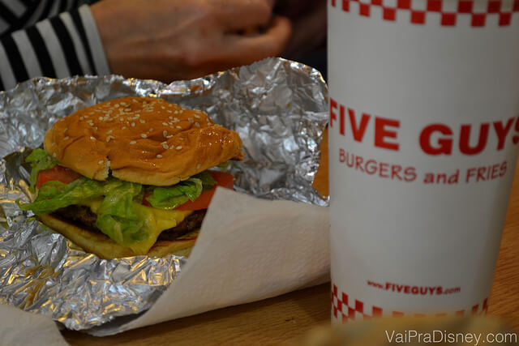

Restaurantes Recomendados

Five Guys: para os apaixonados por cheeseburger
Já publicamos muito sobre comidas saudáveis nos parques e opções para quem não curte os famosos fast food americanos, mas eu não poderia deixar de assumir que sou um apaixonado por hambúrguer. Tenho sempre a missão de experimentar quantos restaurantes e lanchonetes eu puder (e conseguir sem prejudicar minha saúde), em busca do melhor hambúrguer do mundo. Isso fica um pouquinho mais difícil sendo casado com a Re, que não é super fã de junk food, mas hoje vou dar uma dica de um lugar em Orlando que até mesmo ela curte pra caramba, o Five Guys.
Essa lanchonete criado no estado de Virginia, nos EUA, há quase 30 anos, por um pai e seus cinco filhos (por isso o nome Five Guys), já tomou conta do país e até já expandiu para o Reino Unido e Canadá. Em Orlando e região, são encontradas 11 lojas da rede. O que eu mais gosto no Five Guys é o conceito simples que a lanchonete tem. Aqui você basicamente tem a opção de escolher entre um hambúrguer, cachorro quente ou alguns outros poucos sanduíches. Nada de comida gourmet e longos cardápios.
Várias placas com guias, jornais e revistas que recomendam o Five Guys
Para o carro chefe da casa, você escolhe o tamanho do hambúrguer entre normal e pequeno (lá eles chamam de ‘patty’ ou ‘little patty’) e depois ir adicionando quantos ingredientes você quiser, sem custo nenhum a mais. Eu que gosto de cheeseburguer simples, sem muita invenção. Quase sempre peço cheeseburger pequeno acebloado, com queijo, katchup e maionese. Mas são muitos os “recheios” que você pode incluir: maionese, alface, picles, tomate, cebola grelhada, champignon grelhado, ketchup, mostarda, relish de pepino, cebolas cruas, pimenta jalapeño, pimenta verde, molho barbeque e molho apimentado. Como eu disse, o que você quiser sem custo algum.
O legal é que a lanchonete também tem uma linha mais natural, prometendo não servir nenhum produto com conservantes e aquelas coisas químicas que ouvimos por aí. De acordo com eles, o próprio hambúrguer é feito com carne 100% bovina sem adição de nada mais.
Cardápio simples do Five Guys. Para os apaixonados por cheeseburguer
Uma curiosidade do Five Guys, é que logo que a casa abriu, eles receberam uma ligação do Pentágono (pra quem não sabe, o cérebro militar dos EUA) com um pedido de 15 hambúrgueres. O dono da rede perguntou quando eles viriam buscar o pedido e o oficial do outro lado da linha falou “mas todo mundo entrega comida para o exército dos EUA”. No dia seguinte, o fundador colocou uma faixa gigante em frente a loja dizendo “NÃO FAZEMOS ENTREGA”, só pra reforçar o que eles haviam dito na noite anterior.
O presidente Obama também é um fã da rede e quando se mudou para Washington, foi pessoalmente até uma loja do Five Guys e almoçou por lá com toda a sua comitiva. O que ele pediu? Cheeseburger com alface, tomate, pimenta jalapeño e mostarda.
Obama com sua comitiva no Five Guys que fica perto da Casa Branca. Foto: Embaixada dos EUA na Bolivia
Outra coisa que eu adoro lá no Five Guys são as batatinhas fritas. Como elas são cortadas a mão, na própria loja e no dia que serão servidas, elas ficam parecendo as batatinhas que a minha avó fazia quando eu era pequeno. Meio irregulares e bem suculentas, diferente das congeladas que encontramos por ai.
Sacos de batatas que são diariamente cortadas e fritas nas lojas
Batatinha frita que vem junto com o sanduíche, embalado no papel alumínio.
Pra quem não é fã de hambúrguer, o Five Guys também oferece cachorro quente e algumas opção de sanduíches como o vegetariano, queijo quente e o famoso BLT (bacon, alface e tomate).
Não dá para falar do Five Guys sem citar os amendoins que são oferecidos nas lojas de graça, como aperitivo para os visitantes. A princípio não citamos este detalhe na matéria e até meu sogro me ligou para perguntar porque não falamos do amendoim, então aqui está nossa retratação. Além de toda a comida simples e gostosa que é oferecida, o Five Guys oferece este aperitivo muito gostoso gratuitamente que dá um ar aconchegante a casa, e faz a gente se sentir convidado para ficar lá dentro beliscando sem pressa.
Recomendo muito o Five Guys pra quem curte sanduíche e principalmente Cheeseburger. Em Orlando as principais lojas ficam no Premium Outlets da International Drive, e na Sand Lanke. Clique aqui para ver o endereço de todas as lojas em Orlando e aqui para ver o cardápio da rede.

Para finalizar, deixo com vocês o depoimento do leitor João Alvares Neto, que comentou nesta matéria contando a experiência dele com o Five Guys. Acho que ele conseguiu passar exatamente o clima gostoso da casa para a gente, espero que vocês sintam o mesmo.
“Eu conheci o Five Guys em Boston, em 2012 e afirmo com prioridade que é o melhor Fast Food Burguer que por lá tem, inclusive meus amigos americanos que estão acostumados com fast food afirmaram isso. E os amendoins são uma perdição, já passei uma tarde inteira lá sentado comendo amendoim, bebendo refrigerante e jogando papo fora”
Nome: Five Guys
Endereço: 4969 International Dr Orlando, FL 32819 (Veja todas as lojas no Google Maps)
Telefone: +1 407-352-8362
Referência: Dentro do Premium Outlets da International Drive
Preço: US$9-18 por pessoa (maio/2014)
Horário de Funcionamento: Seg-Sab das 11am-9pm e Dom das 11am-6pm
Cardápio: clique aqui para visualizar o cardápio (em inglês)
Avaliação do VPD: